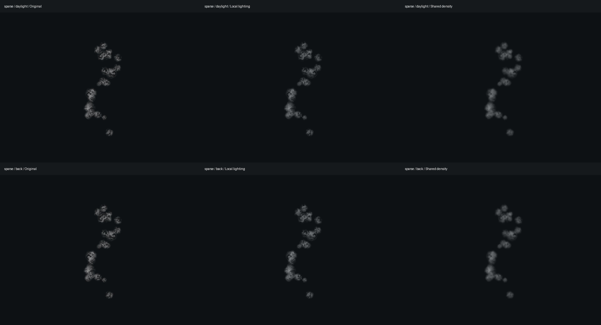
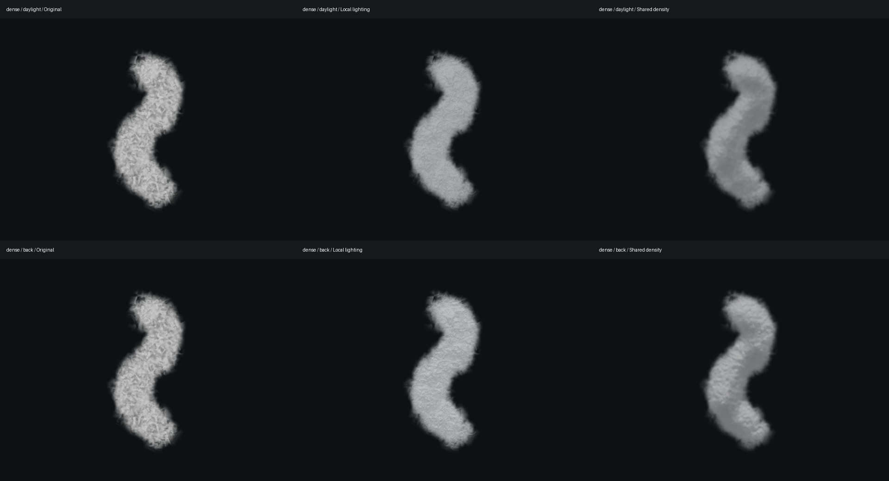
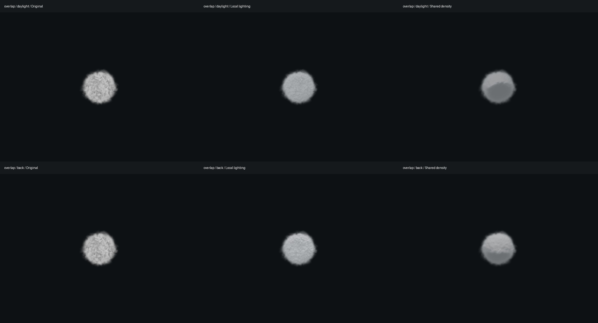
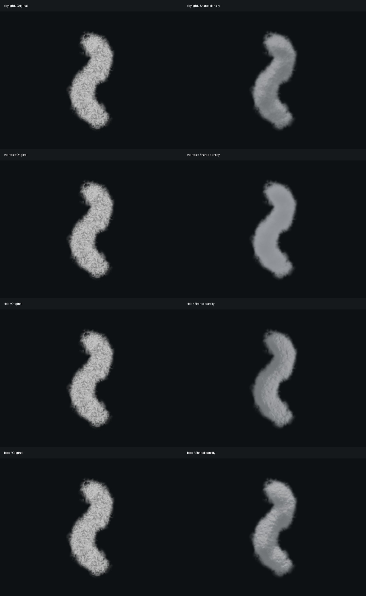

Original v35 on the left; shared-density v36 on the right. Both clips shade the same GPU smoke particles at the same simulation time. The unchanged emitter and vehicle airflow remain active. Captures use a software WebGPU adapter, 12 captured frames per simulation second; these clips illustrate material appearance, not interactive performance.
Identical frozen particles in each row: original, local lighting, shared density. Top: daylight. Bottom: low backlight. These deliberately crowded fixtures expose overlap and shading differences.



